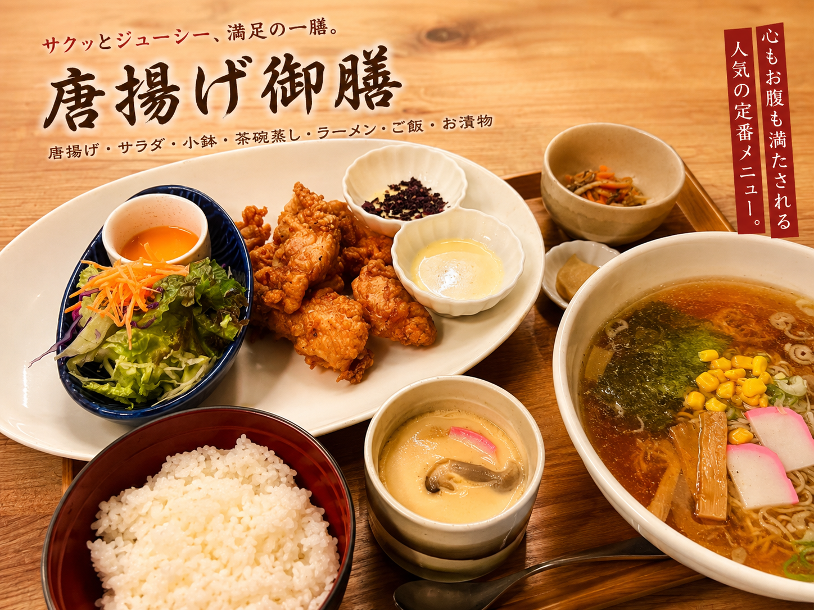
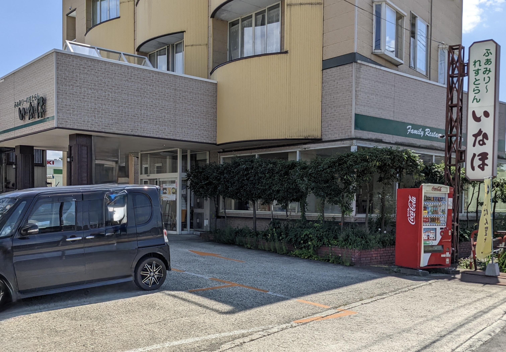

ふぁみりーれすとらん いなほは、 昭和53年9月に「いなほ食堂」として創業しました。
当時は町中華と定食屋を合わせたようなお店としてスタートし、 ラーメン・チャーハン・定食・出前・仕出し・お弁当などを通じて 地域の皆様に親しまれてきました。
現在では創業当時からの人気メニューを残しながら、 御膳スタイルやテイクアウトなど、 現代のニーズに合わせて進化しています。
店主自ら育てたお米を毎日炊き上げています。
季節の野菜をできる限り自家栽培しています。
素材本来の味を大切にしています。